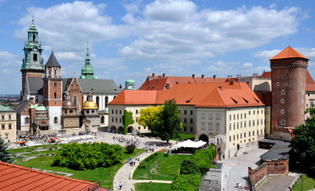

Wzgórze wawelskie jest dla Krakowa tym, czym Akropol dla starożytnych Aten lub Wzgórze Kapitolińskie dla Rzymu. Górujące nad zakolem Wisły skaliste wzniesienie od wczesnego średniowiecza było siedzibą świeckiej i duchownej władzy. Istnieją jednak ślady wskazujące na obecność tam człowieka od okresu paleolitu. Mieszko I (p. 960-992), pierwszy historyczny władca i twórca polskiej państwowości obrał Wawel na jedną ze swych siedzib. Przyjęcie przez niego chrześcijaństwa wprowadziło Polskę w krąg kultury zachodniej. W r. 1000 ustanowiono w Krakowie biskupstwo i zbudowano pierwszą katedrę na Wawelu.
Szczególny rozkwit przeżywał Wawel w wiekach XIV-XIV, za panowania ostatnich Piastów i Jagiellonów. Za panowania królów: Aleksandra (p. 1501-1506), Zygmunta I (1506-1548) i Zygmunta Augusta (p. 1548-1572) przekształcono zbyt ciasny już gotycki zamek, w renesansową siedzibę należącą do najwspanialszych w środkowej Europie. Był to czas niezwykłego rozwoju sztuki i nauk humanistycznych.
Po przeniesieniu się króla Zygmunta III Wazy (p. 1587-1632) wraz z dworem do War-szawy w latach 1609-1611, Wawel stracił na swym dotychczasowym znaczeniu. Pozostał jednak jedną z królewskich rezydencji, a w katedrze nadal odbywały się koronacje i pogrzeby polskich królów. Zamek był wielokrotnie niszczony i grabiony w czasie działań wojennych, m.in. podczas potopu szwedzkiego. W r. 1796 przejęty przez Austriaków po ostatnim zaborze, zamek został zamieniony w koszary armii austriackiej.